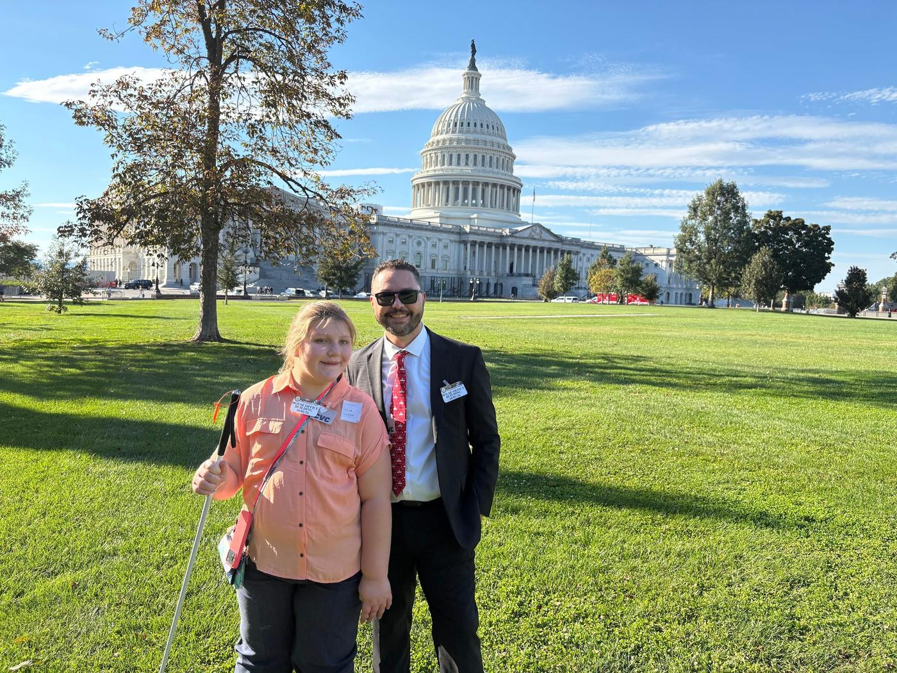

Western Colorado · Family resources and systems change
#AdvocateDad
From Western Colorado to the national table
Lived experience.
Lasting change.
Rob and Isabelle Harris bring lived experience with blindness, special education, rural access, and transition to advocacy for accountable education policy.

“Braille is not dead.”
Rob Harris · U.S. Department of Education Office of Special Education Programs (OSEP) public remarks
What brings you here?
-
Find practical help
Prepare for an IEP, find Colorado Medicaid answers, or explore blindness and low vision resources.
-
Explore policy and take action
Find the public record and next steps on D.C. advocacy, Colorado Medicaid, and accessible school materials.
-
Work With Rob
Bring a workshop to your organization, talk through a partnership, or book a free 20-minute call.
Current priority · Assistive technology and transition
From Access to Agency
Devices open possibilities. Instruction, reliable access, and personal choice help turn those possibilities into everyday skills. Four questions help families and IEP teams plan for meaningful use, continued access, and the student’s own decisions.
Read From Access to Agency and the four planning questions
Use the ECC and transition readiness guide — free to read online; no email required.
Recent updates
Lived experience behind the work
“Systems should work for people—not require people to become experts just to survive them.”
Rob Harris · AdvocateDadCO
- Read our family story
- Hear Rob’s story or read the transcript
- Explore our work
- Follow the D.C. advocacy and congressional asks
- Find press materials
- Explore the advocacy albums
- View the Access Warrior exhibit
- Explore the optic nerve hypoplasia resource hub
- Learn how to offer assistance
- Contact AdvocateDadCO
Support or share
Lived experience belongs wherever decisions are made.
Share the public policy asks. Private travel and meeting details will stay private.